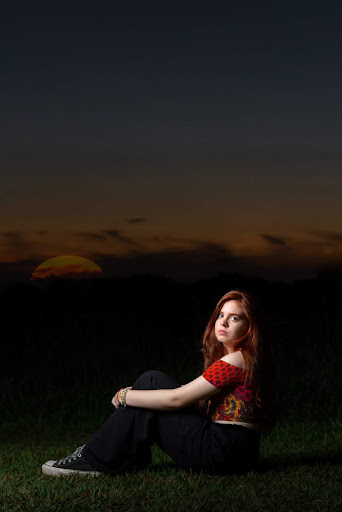

🍓
🍓
🍓
🍓
🍓
Apaixonada por estética
Olá! Sou uma grande entusiasta do mundo UGC (User Generated Content). Estou construindo meu portfólio e explorando minha paixão por contar histórias visuais. Quero trazer a doçura e a estética mágica da natureza (com um leve toque de morango!) para criar reviews sinceros e conteúdos que encantem.

Meus interesses e estudos que ajudam a moldar o meu olhar criativo para o universo das marcas.
Atualmente estudo [Seu Curso / Ensino Médio / Faculdade]. Essa base me ajuda a ter uma visão muito mais estratégica sobre [Ex: comportamento, estética, tendências] na hora de pensar nos roteiros para as marcas.
Sou consumidora assídua e apaixonada por esses nichos, o que faz com que eu consiga gravar vídeos muito mais sinceros e conectados com o público:
Um espaço em construção onde em breve compartilharei meus reviews, unboxings e testes de produtos com muito carinho e criatividade.
Adicionar Vídeo
Adicionar Vídeo
Adicionar Vídeo
* Instrução: Substitua as áreas acima usando as tags <video> ou <img> no código HTML.
Formatos e ideias de pacotes que estou animada para oferecer em breve para marcas interessadas em crescer de forma autêntica.
Ideal para testar formatos
Campanhas completas 🍓
Retainer Mensal
Estou em busca das minhas primeiras oportunidades para mostrar o meu potencial! Seja para um envio de PR (recebidos) ou uma primeira parceria, vou adorar agregar valor à sua marca.